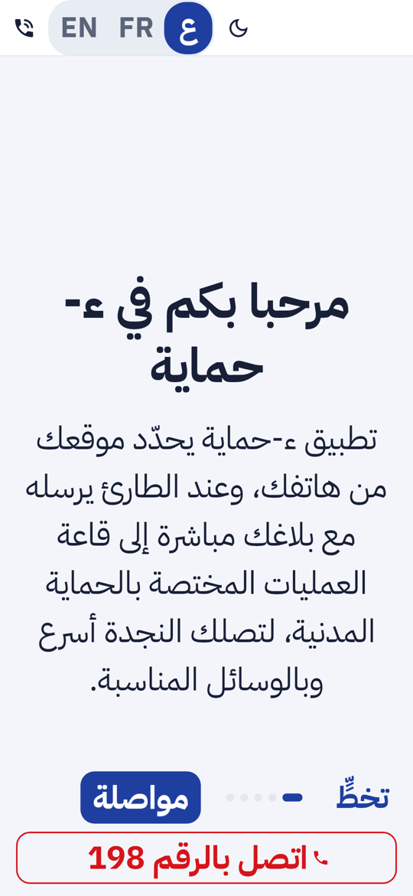
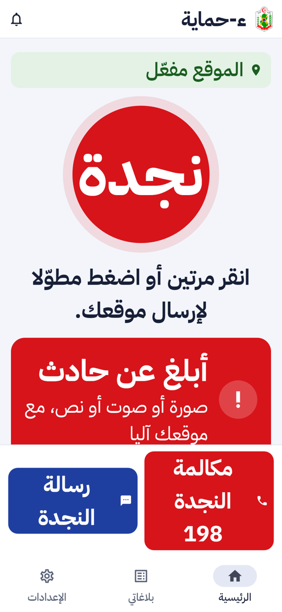
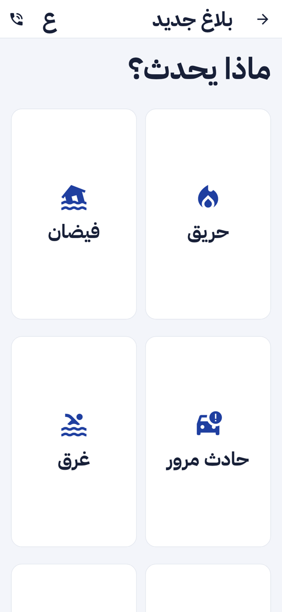
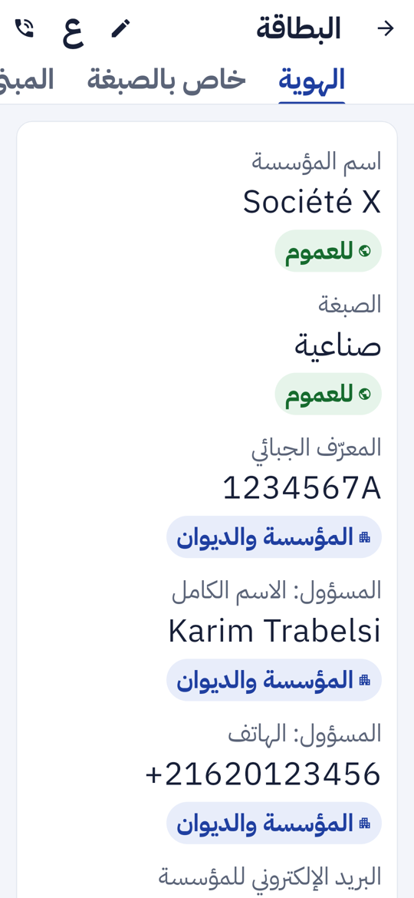

تقرير المرحلة P3c: مراجعة النفاذ لذوي الإعاقة في تطبيق الهاتف (الجزء الأخير من «الشهادات والنفاذ»). قارئ الشاشة، تكبير الخط حتى 200%، أهداف لمس 48 نقطة، التباين، ولا معنى باللون وحده
| الموضع | العَرَض عند 200% | الإصلاح |
|---|---|---|
| شاشة التعريف | زرّا «تخطّ» و«مواصلة» يتجاوزان العرض بـ 25 نقطة | الزرّان مرنان |
| شريط الرئيسية | الشعار والاسم والوصف لا تتسع | الوصف يختفي عند الخط الكبير، والشعار إن ضاق المكان، وزرّا السمة واللغة يبقيان في تبويب الإعدادات |
| شبكة أصناف البلاغ | نص البطاقة يُقصّ حتى 88 نقطة | البطاقة تطول بقدر تكبير الخط |
| جهات الاتصال | زر «إضافة مجموعة» يتجاوز بـ 71 نقطة | الزر مرن فيلتف نصه |
| بطاقة المؤسسة وحقول الصبغة | القيمة وشارة «من يراها» تتجاوزان بـ 248 نقطة | مكوّن جديد PillBeside: الشارة تنزل تحت القيمة |
| شاشات الترحيب (الميثاق) | الأزرار أطول من الشاشة | منطقة الأزرار لا تتجاوز 60% من الارتفاع وتنزلق |
شاشة التعريف، الرئيسية، أصناف البلاغ، وبطاقة المؤسسة بالشارة تحت القيمة:




| بند النفاذ | الحالة | التقدم |
|---|---|---|
| تسميات قارئ الشاشة لكل زر وصورة | منجز، مفحوص آلياً | |
| تكبير الخط حتى 200% | منجز، مفحوص آلياً | |
| أهداف لمس 48 نقطة | منجز، مفحوص آلياً | |
| تباين WCAG AA (فاتح وداكن) | منجز، مفحوص آلياً | |
| لا معنى باللون وحده | منجز، مراجعة يدوية | |
| قراءة صوتية، اهتزاز وومض للصم | خارج P3c، في البند P5 |
تقدم P3c: 100%. P3 كله (P3a و P3b و P3c) مكتمل.
| المكوّن | العدد | النتيجة |
|---|---|---|
| تطبيق الهاتف (flutter test) | 515، منها 88 حالة نفاذ جديدة | كلها ناجحة |
flutter analyze | — | لا ملاحظة |
الاختبار الدائم apps/mobile/test/widgets/accessibility_test.dart يشتغل في كل CI: شاشات الترحيب الخمس باللغتين بخط 200%، و26 مساراً باللغتين بخط 200%، وبالعربية في الوضع الداكن. في كل حالة: أهداف اللمس، والتسميات، والتباين، ولا خطأ تخطيط. لا تغيير في الخلفية ولا في الويب.
لا حزمة جديدة ولا ترحيل. القائمة الكاملة في versions.md.
0.15.0 (البناء 14) · Flutter 3.47.7 · 1
flutter build apkمع Flutter 3.47.7 · BSD-3-Clause · 2
flutter test test/widgets/accessibility_test.dartspec/: حالة متطلب النفاذ، 515 اختباراً للتطبيق، خارطة الطريق.presentation/.بقية البند P5: القراءة الصوتية للأدلة والتنبيهات، والاهتزاز والومض لضعاف السمع، وتجربة TalkBack يدوية. ثم تطبيق الأعوان والتقارير الميدانية حسب خارطة الطريق.